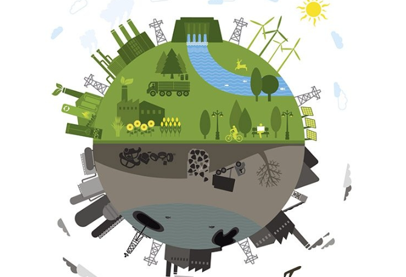

გარემოს დაცვა არის პროცესები და აქტივობები, რომლებიც მიზნად ისახავენ ბუნებრივი რესურსების და ეკოლოგიური სისტემების დაცვას. ეს მოიცავს ჰაერის, წყლის და ნიადაგის ხარისხის შენარჩუნებას.
გლობალური ტემპერატურა იზრდება ადამიანის საქმიანობის გამო, განსაკუთრებით ქვანახშირის, ნავთობის და ბუნებრივი აირის გამოყენების შედეგად. ეს იწვევს ექსტრემალურ ამინდებს, როგორიცაა ძლიი წვიმები და წყალდიდობები, ასევე ზღვის დონის მატებას.
ჰაერის, წყლის და ნიადაგის დაბინძურება კვლავ ძალიან დიდი problema არის. ინდუსტრიული საქმიანობა, ავტომობილების გამონაბოლქვი და პლასტიკის გამოყენება ძირითადი ფაქტორებია, რომლებიც ბუნებას აზარალებენ.
მრავალი სახეობა გადაშენების საფრთხის წინაშე დგას, რაც ეკოსისტემების გაუწონასწორებას იწვევს. კლიმატის ცვლილება და ბუნებრივი საცხოვრებელი ადგილების დაკარგვა სახეობებს დიდი პრობლემების წინაშე აყენებს.
მიუხედავად იმისა, რომ ბევრი ქვეყანა ცდილობს გარემოს დაცვის კანონების გაუმჯობესებას, არსებობს პოლიტიკურ და ეკონომიკურ სირთულეები, რომლებიც ხელს უშლის ეფექტურ ზომებს.
ბოლო წლებში საზოგადოებაში გაიზარდა გარემოს დაცვის მნიშვნელობის გაცნობიერება. ახალგაზრდები ხშირად ჩართულნი არიან გარემოს დაცვის მოძრაობებში და მოითხოვენ უკეთეს პოლიტიკას.
არსებობს ინიციატივები, რომლებიც მიზნად ისახავს ხეების ჩადებას, წყლის ხარისხის გაუმჯობესებას და მდგრადი სოფლის მეურნეობის მხარდაჭერას.
გარემოს დაცვა ძალიან მნიშვნელოვანი საკითხია, რომელიც საჭიროებს გლობალურ ყურადღებას და ქმედებას. თითოეული ადამიანის მონაწილეობა და პასუხისმგებლობა მნიშვნელოვანია, რათა შევინარჩუნოთ ეკოლოგიური სისუფთავე და უზრუნველვყოთ მდგრადი განვითარება.